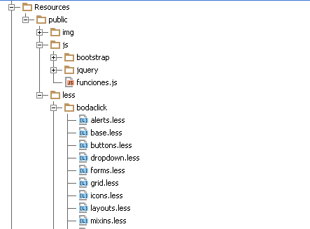
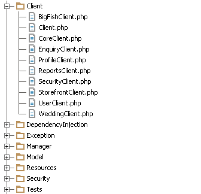
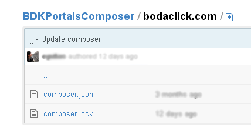

deSymfony 2013
Bodaclick, SOA / ROA - by Marco Ferrari
Links:
https://joind.in/8842Marco Ferrari
Puntos:
- ¡La que liamos!
- Piedras en el camino
- ROA / REST
- SOA
¡La que liamos!
¡La que liamos!
- Core, un corazón a todo REST.
- Accounts, responsable de la comunicación con Core por lo que concierne las actividades básicas de usuario (alta, login, recuperar contraseña)
- 8 X Portal, el proyecto más “raro” (no composer).
- Intranet, para las gestionar lo que pasa detrás del escenario.
- Un sistema de mensajería. Actualmente estamos usando RabbitMQ.
- MySQL, un cluster MongoDB y Twemproxy (Twitter) + Redis.
- Y ...Jenkins, GitHub, Satis y Capifony + ANT...
Piedras en el camino
Piedras en el camino
GitHub

GitHub (private) + Composer -> Satis
{
"repositories": [
{ "type": "composer", "url": "http://packages.example.org/" }
],
"require": {
"company/package": "1.2.0",
"company/package2": "1.5.2",
"company/package3": "dev-master"
}
}
Dos proyectos y un layout gráfico
CoreClientBundle 1
CoreClientBundle 2
/**
* Requests Legacy for retrieving the portal's full info
*
* @param String $domain domain name
*
* @return array
* @throws \Guzzle\Http\Exception\ClientErrorResponseException
*/
public function getPortal($domain)
{
$request = $this->client->get("v1.1/portals?domain=$domain");
$portal = $this->sendRequest($request, true);
CoreClientBundle 3
public function directoryFilterAction(Request $request)
{
$session = $this->get('session');
$portalCore = $this->get('session')->get('portal');
try {
$portal = $this->get("bdk_core_client.storefront_client")
->getPortal($portalCore->getDomain());
} catch (\Exception $e) {
$session->setFlash('error', 'An error has occurred.');
}
Portal
Legacy
- LegacyDbBundle
- LegacyBundle
- LegacyWsBundle
Seguridad, sesiones y stickiness
- WSSE
- Balanceo sin stickiness
- OAuth2
- Sesiones compartidas -> SncRedisBundle
¿ROA?
© ROA
Resource Oriented Architecture
Definición
"The ROA is a way of turning a problem into an arrangement of URIs, HTTP, and XML that works like the rest of the Web, and that programmers will enjoy using."
by Leonard Richardson and Sam Ruby / RESTful WS
Recurso
"A resource is anything that’s important enough to be referenced as a thing in itself."
by Leonard Richardson and Sam Ruby / RESTful WS
Recursos -> URL
- /api/secured/users/{slug}
- /api/public/users/{slug}
Métodos
- POST /api/secured/users/{slug}/edit
- POST /api/secured/users/{slug}?action=edit
- PUT /api/secured/users/{slug} <- la que usamos
Versiones / Filtros
- GET /portals?domain={slug}
- GET /v1.1/portals?domain={slug}
¿Rest?
© http://onthewillows.com/wp-content/uploads/2013/04/Rest.jpg
Representational State Transfer
Definición
“Architectural Styles and the Design of Network-based Software Architectures” and describes a series of constraints that exemplify how the web’s design emerged utilizing the Hyper Text Transfer Protocol.”
by Roy Fielding’s Doctoral Thesis
¿Por qué REST?
- Simple
- Claro
- Bien soportado (trás librerías)
- Stateless
Metodos
- HEAD
- GET
- POST
- PUT
- PATCH
- DELETE
Response
- 20X OK
- 30X Algo ha cambiado
- 40X Error recurso
- 50X Error servidor
Rest 1
- GET /api/secured/users -> Lists all Users
- POST /api/secured/users -> Creates a new Profile
- GET /api/secured/users/{slug} -> Finds and display a User
- PUT /api/secured/users/{slug} -> Updates a Profile
- DELETE /api/secured/users/{slug} -> Deletes a Profile
Rest 2
- GET /api/v2/secured/enquiries -> Action to get a list of enquiries
- GET /api/v2/secured/enquiries/{id} -> Action to get an enquiry by id
- DELETE /api/v2/secured/enquiries/{id} -> Delete an enquiry
- PATCH /api/v2/secured/enquiries/{id}/accept -> Accept an Enquiry
- PATCH /api/v2/secured/enquiries/{id}/reject -> Reject an Enquiry
¡SOA!
© http://www.verexo.com/wp-content/uploads/2013/01/SOA-Fotolia_11660239_XS.jpg
Service Oriented Architecture
Definición
“Service Oriented Architecture describes designing a system by modeling business processes as services or “actions”. Each service is a distinct unit of functionality and does not interact with the other services.”
¿Por qué SOA?
Procesos recurrentes:
- Mailing
- Comprobaciones
- Migraciones perezosas
- Tareas asíncronas
- Lógica de negocio
Filosofía UNIX
Haz una cosa pero hazla bien
Bloques funcionales aislados,
donde confinar la lógica de negocio.
public function createImageFromBinary($binaryString, $path, $filename)
{
$image = imagecreatefromstring($binaryString);
if (!imagejpeg(
$image,
"{$this->uploadDirs[$path]['path']}"/$filename"
)) {
throw new \InvalidArgumentException(
"Path {$this->uploadDirs[$path]['path']}/$filename not exists"
);
}
return "$this->serverUrl{$this->uploadDirs[$path]['path']}/$filename";
}
use BDK\CoreBundle\Model\Manager\ImageManager;
// ..
public function processImage($profile)
{
$webImagePath = $this->imageManager->createImageFromBinary(
$profile->getPhoto(),
"profile_avatar",
sha1($profile->getUsername()) . ".jpg"
);
return $webImagePath;
}
public function postUser(Request $request, $profileType)
{
$legacyParams = $request->request->get('legacy');
$coreParams = $request->request->get('core');
//...
$legacyEntity = $this->userManager->createLegacyUser($legacyParams,
$profileType);
$coreUser = $this->userManager->createCoreUser(
$coreParams,
$profileType,
['Create', 'Default']
);
$legacyEntity->setNewID($coreUser->getUser()->getId());
//...
public function postNovioAction(Request $request)
{
$view = FOSView::create();
$viewData = $this->container->get('bdk.legacy.rest_manager')
->postUser($request, ProfileType::USER);
return $view->setStatusCode($viewData['status'])
->setData($viewData['data']);
}
public function update(ServiceFormClass $serviceFormClass,
$serviceType, $flush = true)
{
$serviceClass = ServiceFormClass::SERVICE_TYPE;
//...
$service = $this->loadService($serviceClass, $serviceFormClass);
$this->dm->persist($service);
if (true === $flush) {
$this->dm->flush();
}
return $service;
}
use BDK\WeddingBundle\Model\Manager\ServiceManager;
//...
public function process()
{
$this->form->bind($this->params);
//...
$service = $this->form->getData();
$serviceType =
($service->type == null ? $this->serviceType : $service->type);
return $this->serviceManager->update($service, $serviceType);
}
Marco Ferrari
“I'm a Web Worker.
I'm interested in networking (the largest meaning).
Drive an information through TCP/IP or web services...
...it doesn't matter.” by Me
- G+ Symfony
- Github: marco-msg-ferrari
- @ferrari_marco